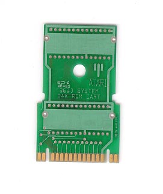

The Atari 3600 System
Atari
had planned and had built several protoypes of a new video game console
to replace the aging Atari 2600 VCS. The new system, code name
"Sylvia" within Atari was known as the Atari 3600. This new
system was a 10-bit video game system. However after it was
shown to the programmers it was scrapped. The new console
was too difficult to program and noone wanted to work on it.
It is rumor that a certain programmer who's calling card is HSW did do
a prototype Pac-Man/Mouse Trap test game for the 3600.
Apparently Atari seemed to like the console designation 3600 because many
new console designs were called 3600. The image shown
below is a prototype cartridge PCB for the Atari 7800, however you will
notice that it says Atari system 3600 24K Rom, and also look and the Fuji
symbol and how its sweeping legs are missing, hmmmm....
